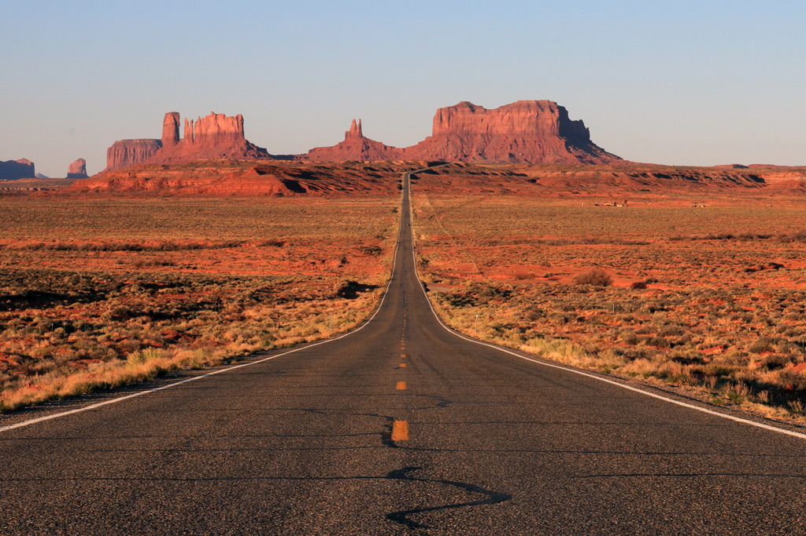
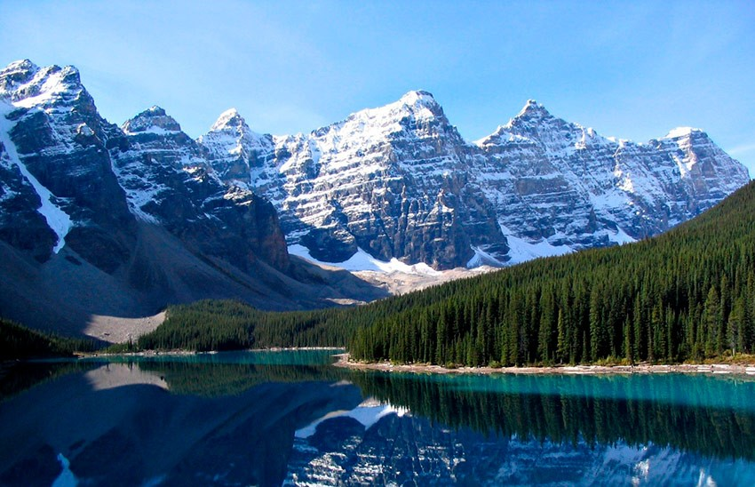

Соединённых Штатов Америки — In God We Trust
Соединенные Штаты Америки - земля, где смешались нации и обычаи, переплелась реальность с фантазией. Здесь строгая красота Ниагары сменяется беспечностью солнечной Флориды, а синева Тихого океана безумством красок неоновых огней Лас-Вегаса. Америка не похожа ни на одну другую страну, и побывать в ней хотя бы раз в жизни нужно непременно. Соединенные Штаты Америки расположены на североамериканском континенте между Канадой и Мексикой. Соединенные Штаты Америки - федеративная республика, в состав которой входят 50 штатов, обладающих определенной автономией, и столичный федеральный округ Колумбия. 48 штатов располагаются компактно, 2 - отдельно: Аляска (статус штата получила в 1958 году) и Гавайские острова (статус штата получили в 1959 году).
- Достопримечательности
- География
- Климат
- Язык
- Религия
- Население
- Праздничные и нерабочие дни
- Чаевые
- Национальная кухня
В США вы сможете увидеть самые восхитительные города, потрясающие воображение пейзажи и разностороннюю культуру. Нация США многообразная по своему составу и образу жизни; американцы по-разному ищут для себя дорогу к благополучию или на небеса, но их сплотили вместе идеалы Декларации Независимости, и поэтому США самая богатая, и сильная страна в мире.
Сверенная Америка уникальный по своему географическому положению климатическим условиям, континент. Поэтому отдых в США может быть связан со всеми мыслимыми и немыслимыми видами туризма. В этой стране есть все. Все климатические зоны, все из существующих видов ландшафтов, каждый найдет для себя что то свое . На данный момент сформировалась такая национальность как американец, которая представляет из себя гремучую смесь все народов и народностей мира, своего рода современный Вавилон. Коренного населения, практически не осталось. Курорты США, на которых стоит обратить внимание, это национальные парки и крупные города, которые разбросаны по всей стране.
США – государство-гигант, ведущая экономическая и военная держава, занимающая третье место в мире по площади и численности населения.

Крупнейшие города
- Нью-Йорк
- Лос-Анджелес
- Чикаго
- Майами
- Хьюстон
- Филадельфия,
- Бостон
- Сиэтл
Соединенные Штаты Америки: страна разнообразия, инноваций и влияния
Соединенные Штаты Америки являются маяком свободы, инноваций и культурного разнообразия. От захватывающих дух пейзажей до шумных городов США предлагают множество возможностей и впечатлений. Его влияние на мировую арену нельзя недооценивать, поскольку он продолжает формировать глобальную политику, продвигать технологические достижения и вдохновлять людей из всех слоев общества. Путь США — непрерывный, с вызовами и триумфами, которые формируют его идентичность и влияние.
Разнообразия климата
Климат США, учитывая размер территории страны, имеет большое разнообразие. Достаточно сказать, что её площадь составляет чуть менее 10 миллионов квадратных километров. Однако в большей части континентальный климат с холодной зимой и тёплым летом, иногда даже жарким. Времена года разной продолжительности в зависимости от штата.